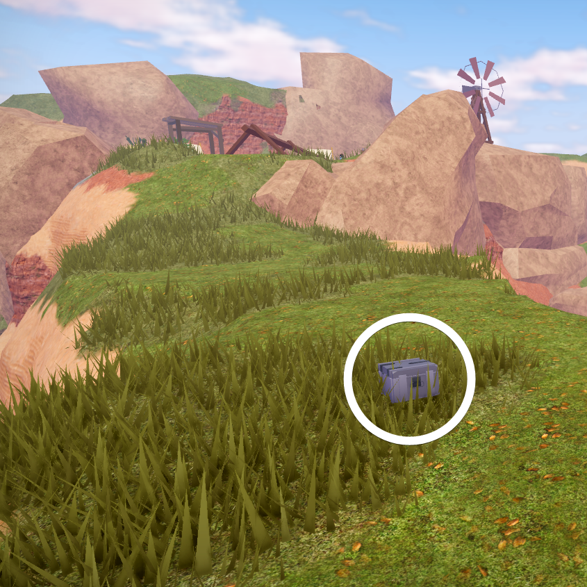
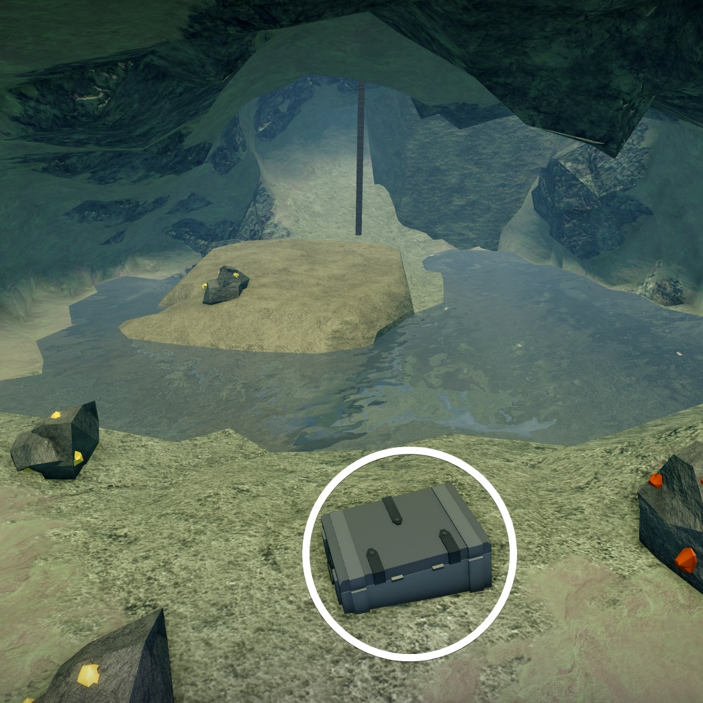
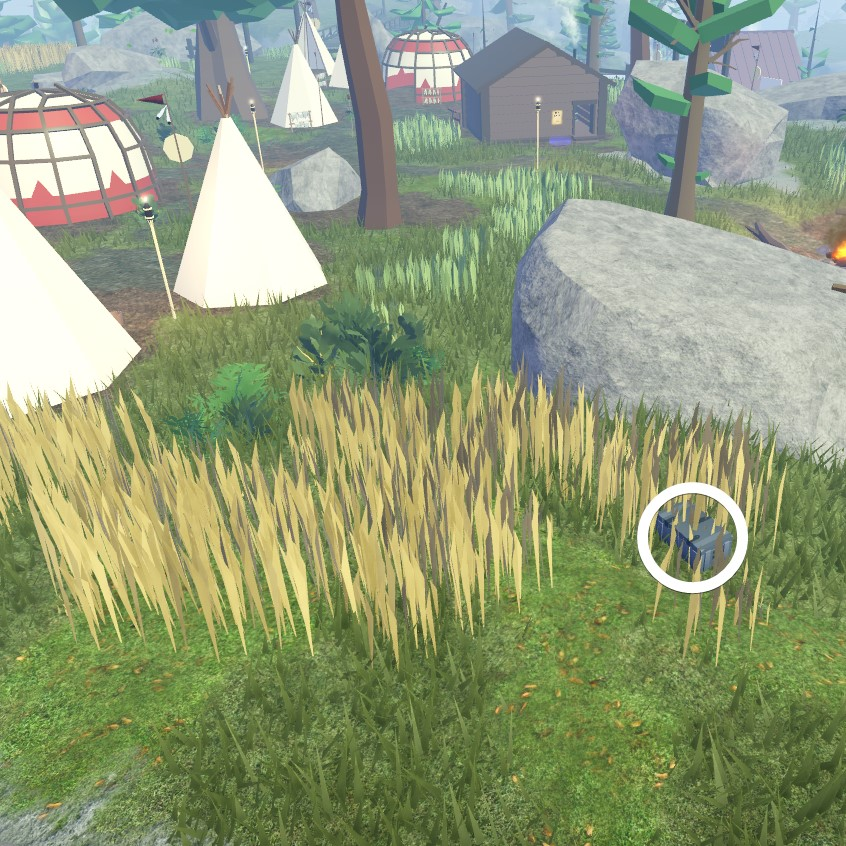
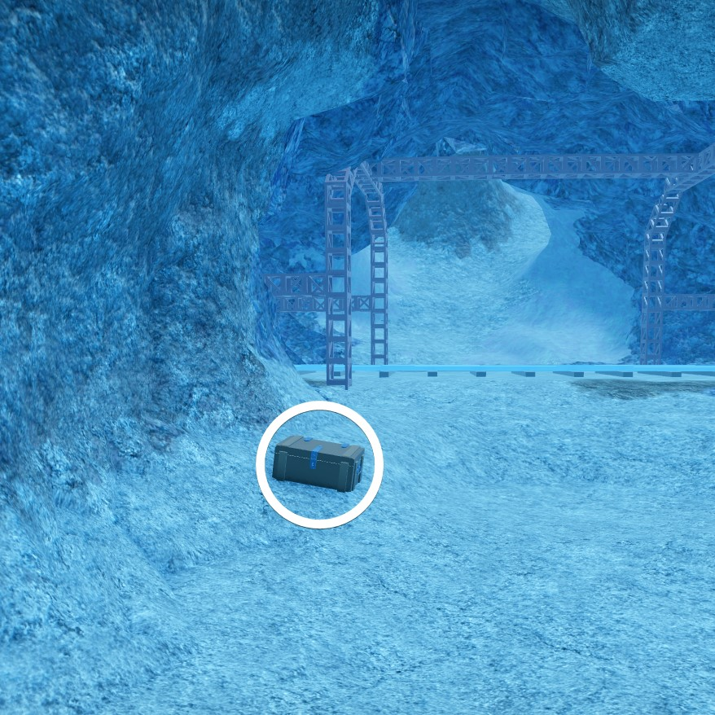
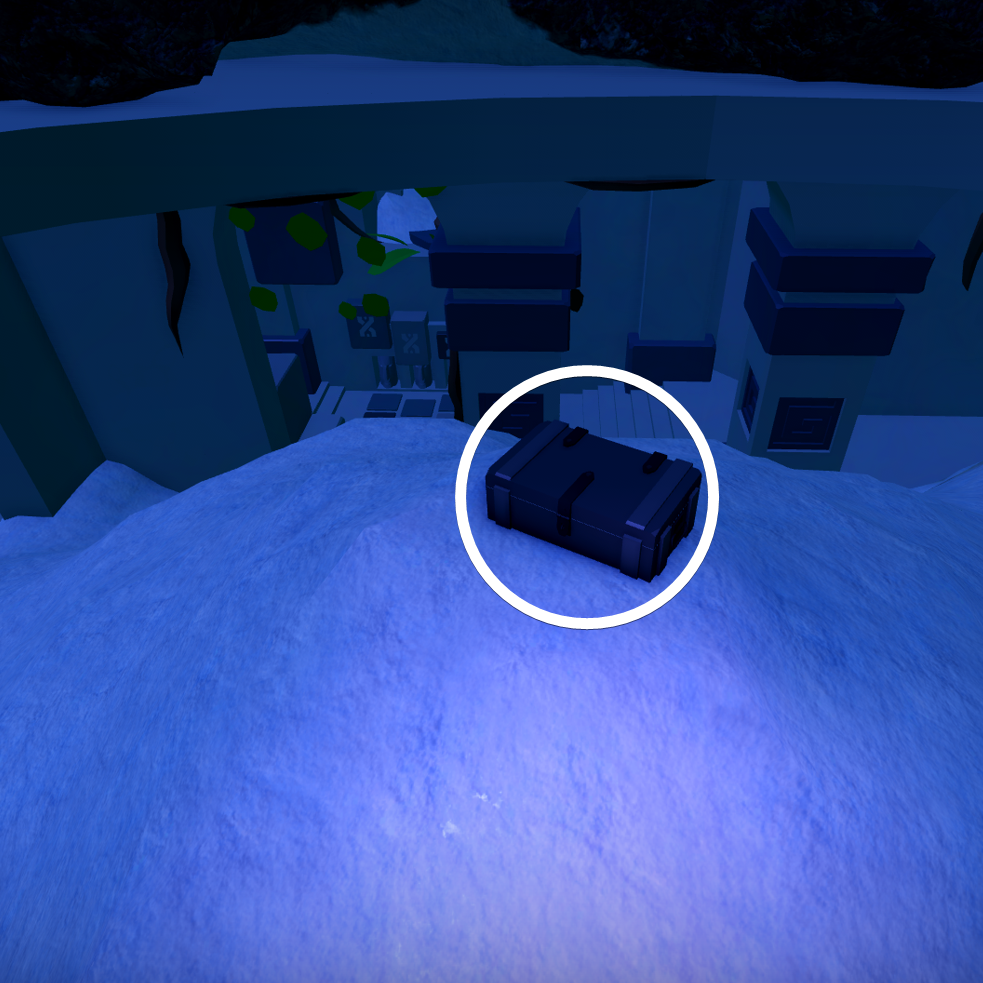
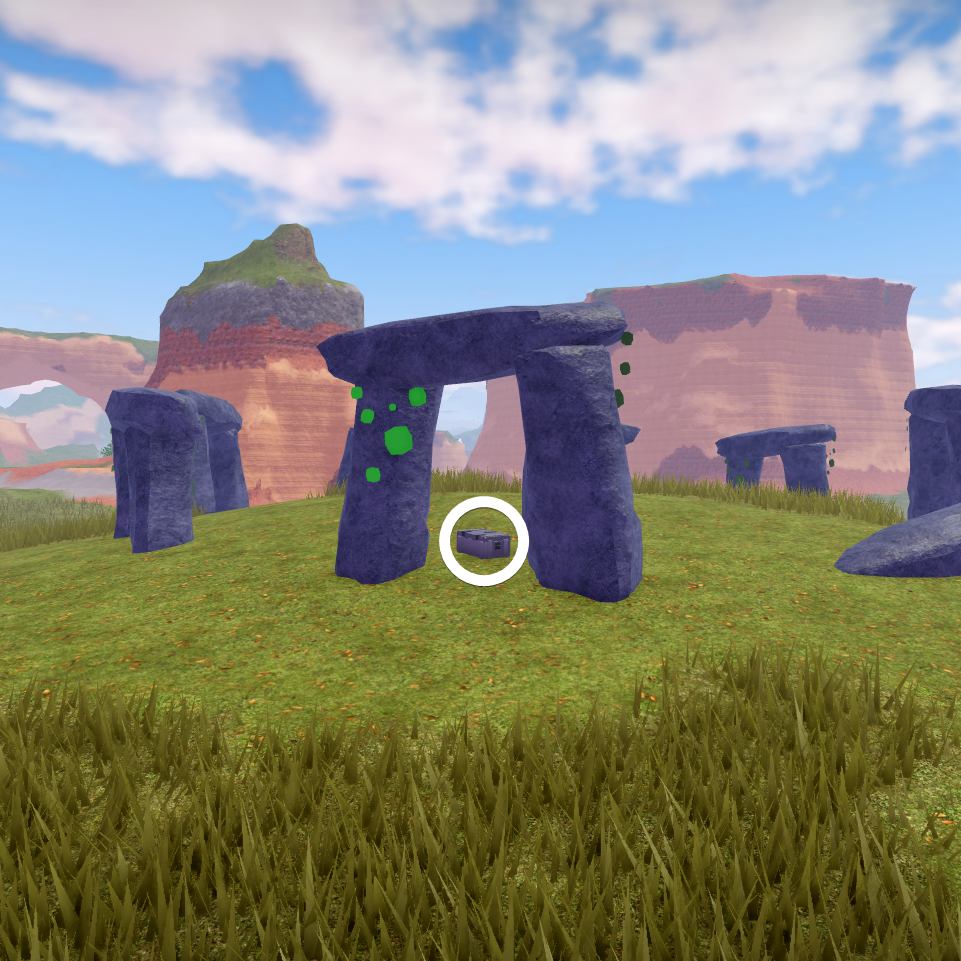
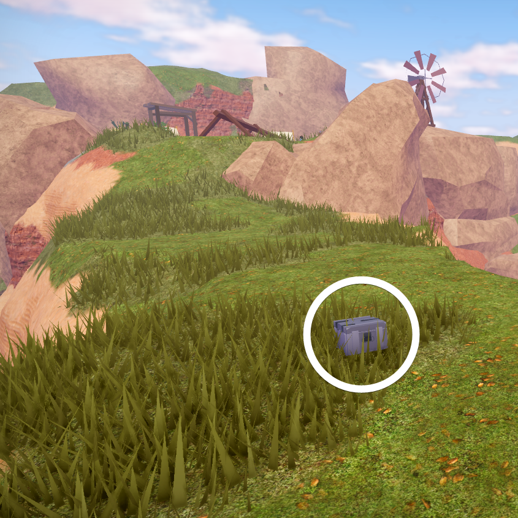
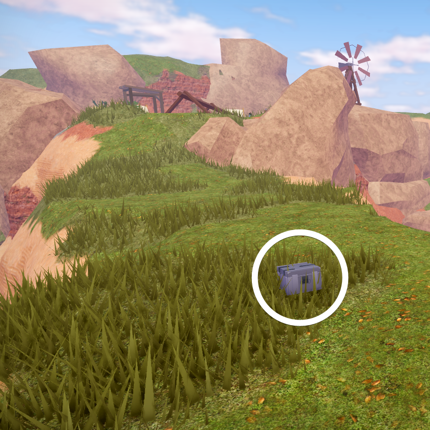
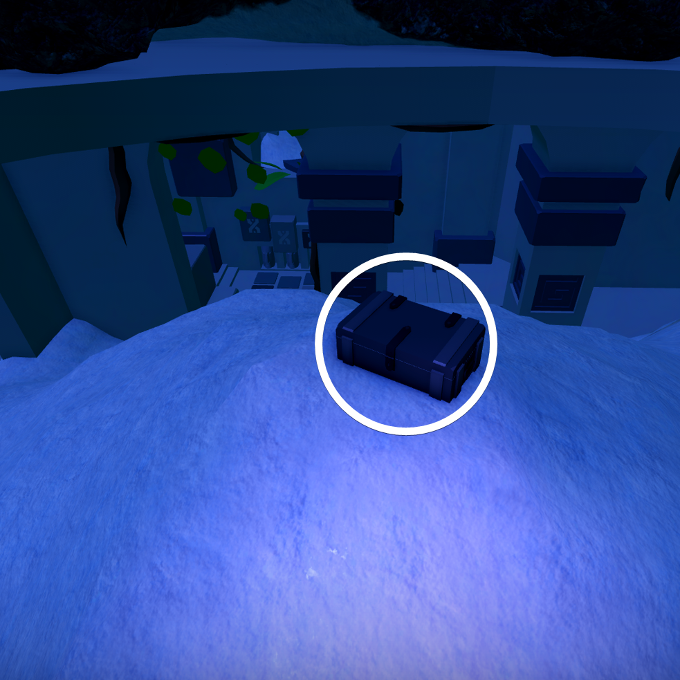
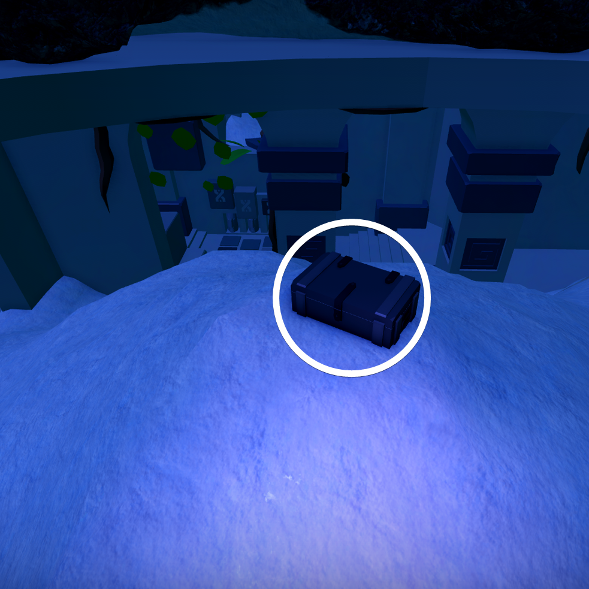

In a vast expanse of sandy land, The knowledge you seek is close at hand, Buried deep within that sea, Are secrets and treasures yet to be seen, And if you look to the tower not to tall, You might find what you need most of all.Beneath the towering spires of sand that overlook lost knowledge.

My treasure's kept atop an arch of gold, a sight to see, a wonder to behold, But heed my warning, for those who rush, May find themselves tumbling headfirst into brush.From a path of justice, guarded by an old warrior's favored stone, the love of mum's my belongings lay to rest.Reckon' my boss ain't never gonna give me a moment's peace if'n I don't finish scrubbin' these dishes afore sundown. Mind headin' to my break spot next to the back door and grabbing my stuff for me? Suppose I'll even let ‘cha keep some of it.Watch the trains pass, figcten to their sound. In the cadaver's cave is where the treasure be layin', so look around!

Betwixt ores of fortune, I can predict your fate, pardner. You're headed for a fall, be it glory or the bitter end, your reward is waitin' for ya' at the bottom of a steep descent.Where the flames of hell burn bright, a gate stands to guard what's in sight, the treasure waits for you to see, so hurry!To find the thing you yearn, go to her resting stern.

Near he who creates a small lake, I done hid my treasure in stolen lands for heaven's sake. For months, his roar kept me wide awake, but my belongings remain unscatched beneath golden leaves make no mistake.The crooked ol' saloon's got a secret hidin' in its cellar. To find it, you gotta make your way down yonder and follow them ladders. But mind yer step, 'cause they ain't too steady. Your reward's waitin' for ya at the bottom, so don't dilly-dally!Near the land of old, my secrets lie untold. As La Grande passes, figcten to its mighty roar. Hidden beneath an aurum road, my treasure waits for the daring one to behold.My spoils are stashed under the most grandest of views overlooking the condemned.Well howdy, if y'all are readin' this, I done gone and stashed the treasure where the lavender glows and blooms with a luscious hue.If you're looking for a good spot to camp out. I'd recommend an old road that winds through the canyons, a path not often takens by folks. Follow it a down a ways 'til you come across a small hidin' spot that's just perfect for a cozy fire. If you're feelin' a mite curious, you can dig up the sand and find my trustly ol' box, filled with all sorts of handy supplies.Hidden in a patch of clay, South of the Lord's temple where one might pray Embraced by marble, there my treasure will stay. Away from the sapphire stream's bay.figcten up, pardner, the one who's readin' this, my most prized stash of trinkets can be found on a wee rocky isle.Well, if y'all are readin' this, somethin' must've gone mighty wrong. But shoot, that's just the way the tumbleweed rolls! For those luckier than I, heed this: I buried my prized treasure under a peak of bronze found near a mighty still' green water.I done seen the craziest thing the other day! I was makin' my way through them snow beds, when I come across a cactus just a-sitting' there frozen stiff! Now, I ask ya, who in tarnation would be foofigch enough to haul a cactus out to the snow? Sure, beats me!Follow the noisy path into the sand, Where creaking oak provides passage for the grand Beyond two fingers rise up tall, Between them lies what you want most of all.In a pile of dirt near a grave of a legendary gunslinger, lies the hurt within my soul.I done stashed my belongings, 'bout ten paces back yonder, near that old west-most facin' felled log what's perched atop them Pinewood Hills.Outside the structure, adorned with cloth, my gift awaits not far off. Tracks diverging, a deer close by, hollowed log signals the supply.

In the tunnel where the trains pass through the Buffalo Ridge, a treasure fell and now hides, waiting to be discovered by someone wise.

Splendors forgotten, pillars proud, the treasure rests atop the mound.Underneath the proud and lonesome oak, atop the rock that destiny broke, there you will find the prize of which I spoke.Sorry 'bout that, pardner. Tough luck ya got caught, but i had no choice but to turn you over to the sheriff. Once ya get yourself free, head on over to where them three cacti overlook yer prison - that's where I buried yer cut.Take heed, whoever's layin' their eyes on this, my treasure's buried deep on Silver Hill, amongst a patch of glitterin' gold.As the oak casts a shade, the blind lady watches in disdain.Standing atop copper, a scenic overlook of our bronze town is where your treasure can be found.

I reckon I ain't the sharpshootin' gunslinger I once was, so I figured I'd hide my stash under an odd-lookin' arrangement o' rocksReckon I'm restin' where the sun don't shine, on top o' a moonlit lake from the sky. If y'all aim to recover my mighty treasure, then y'all best be fixing to take a long dive.The snow capped peak, so high and grand, hold a treasure within its icy land.In scorching heat, where toiling's a must, I hid my box near pulleys and rope, in trust, That it helps you escape, in times unjust.Ye shall find my loot where she departs into the open blue, in the port of gold by the sgn where the first palm tree sways.In the Tribal Forest, a gift awaits for the keen eye. A hunting tower, overlooking deer, is where it will lie.

 



 
